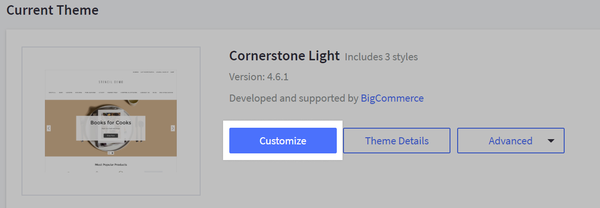

Welcome to PROJECT theme by Coalition Technologies documentation
Developers info
- Base theme: Beautify 1.5.4
- Node: 18.15.0
- Command: stencil start -v CoalitionTechnologies
Project pages designed
Page Builder
Page Builder allows you to customize the different style elements of your theme, like colors, text sizes, the number of featured products to show on the homepage, and more. You can use this to tailor your storefront so it more closely reflects your brand.
In addition, you can drag and drop content onto pages, like text blocks, images, videos, banners, carousels, buttons, and blocks of custom HTML. This enables you to showcase your products in a way that is visually rich.
To access Page Builder go to Storefront › Themes › Customize to launch Page Builder. You can also read more about the Page builder in this documentation.

Whenever we need to edit the site, we need to be in 'Design' mode. And whenever we need to test the site, we need to be in 'Preview' mode. You can also test on different screen sizes by clicking on the icons at the top of the Page Builder.

While editing the widgets in Design mode, sometimes they seem to break, but this is because the scripts stop running. If this happens, you can fix it by clicking on 'Save' in the top right corner of the Page Builder.
After clicking on 'Save', you can click on 'Preview' to see the changes in action. If you want to see the changes on the live site, you need to click on 'Publish'.

Custom Widgets
Custom widgets are developed by Coalition Technologies according to the mockups. They can be used in the Page Builder. You can find them in the Page Builder under the Custom Widgets section.
Theme
We are using a Base theme for this project. The base theme is Beautify (Furniture).
Whenever selecting applying a theme on the front end, make sure to always select the style CoalitionTechnologies.
There are some further instructions for the theme in this link. Please note that due to the customizations made in the theme, some of the instructions may not be applicable.